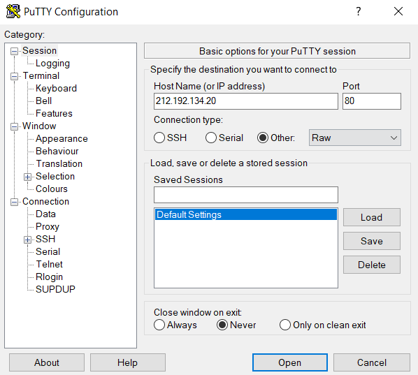
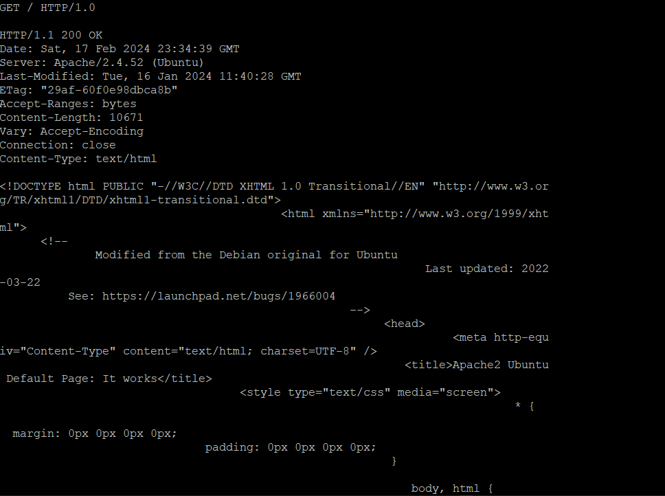
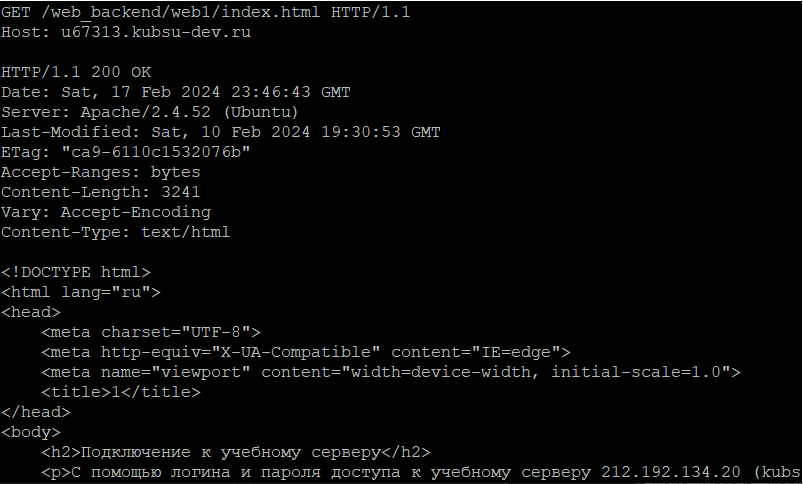
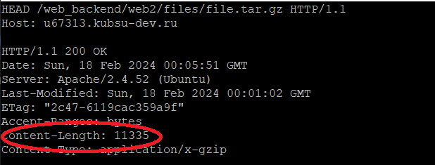
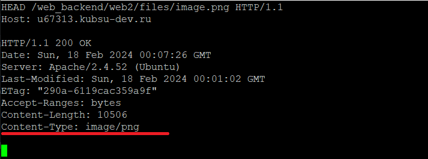
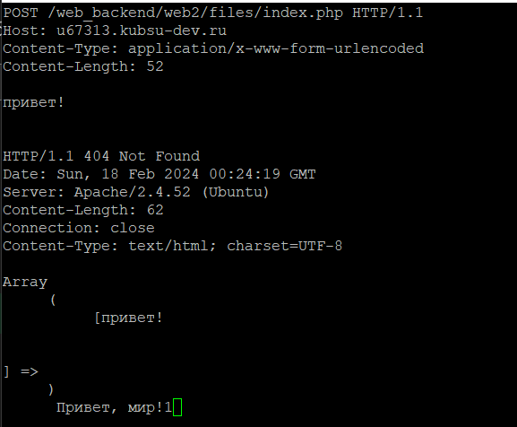
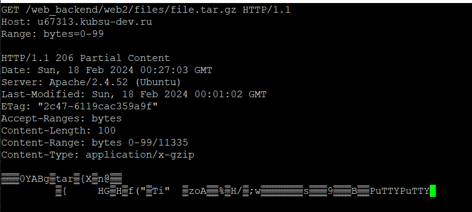
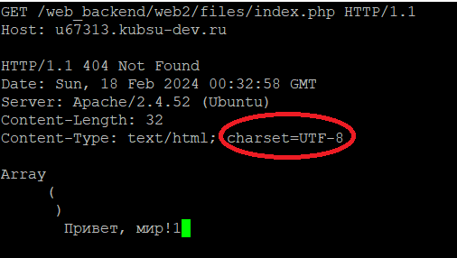

Соединение c хостом kubsu-dev.ru по порту 80 в протоколе сетевой печати RAW.
Получение информации методом GET. В версии 1.0 после обработки одного запроса соединение закрывается.
В версии 1.1 сервер по умолчанию не разрывает соединение, поэтому клиент может посылать другие запросы. Host может осуществлять обратное разрешение доменных имен, то есть, получать список доменных имен, связанных с заданным IP-адресом, используется главным образом для диагностики серверов доменных имен.
В Content-Length записано число, обозначающее точную длину байта тела HTTP. Оно равно 11335
Информация содержится в заголовке ответа в графе "Content-Type"
С помощью метода пост отправляем на сервер коммент в запросе клиента. Данные находятся в теле содержимого запроса клиента
Заголовок запроса Range указывает серверу какую часть документа ему необходимо вернуть. Синтаксис Range: <единица>=<начало-диапазона>-<конец-диапазона>
Получение информации было произведено методом GET и HEAD. Заголовок Accept-Charset запроса HTTP сообщает какую кодировку клиент может понять.сервер выбирает один из предложенных вариантов, использует его и информирует клиент о своём выборе в Content-Type ответном заголовке.
